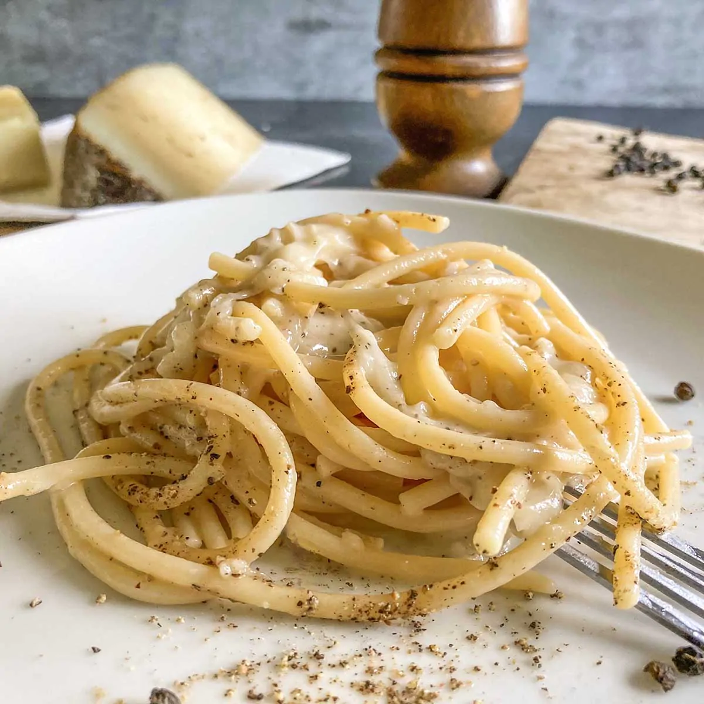

Cacio e Pepe
Amazing simple recipe for my favorite homemade pasta. It is very simple and even someone that is a terrible cook(like myself) can make it with ease and impress the pickiest eaters

Items needed to make the pasta
- 1 Large Pot
- 1 Large Bowl
- 1 Measuring Cup
- 1 Strainer
Ingredients (4 Servings)
- 12 ounces spaghetti (Fettucine)
- 4 tablespoons unsalted butter, at room temperature
- 1 tablespoon extra-virgin olive oil
- 2/3 cup grated parmesan cheese
- Kosher salt and freshly ground black pepper, to taste
Directions
- Bring large pot of salted water to a boil
- Add the spaghetti and cook until soft, 8 to 10 minutes
- While the pasta cooks, mash the soft butter with olive oil and parmesan in the large bowl until it becomes a paste
- Once pasta is cooked, collect 1/2 cup of the pasta water and then drain the rest of the spaghetti
- Add the spaghetti to the bowl with butter mixture
- Toss well and add the pasta water in until it makes a thick and creamy sauce that coats the pasta strands
- Add salt and pepper to your liking
- Enjoy!